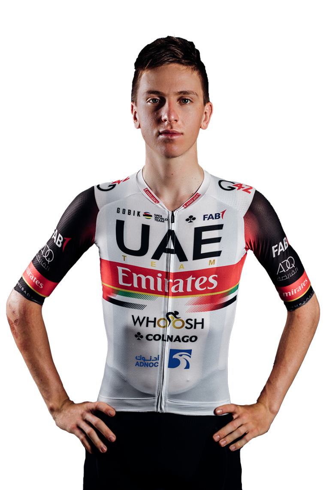

TADEJ POGACAR
Porfessional Road Cyclist
- UAE Team Emirates
- Height: 1.76 m ,Weight: 66 kg
- September 21, 1998, Komenda, Slovenia

Tadej Pogačar(born 21 September 1998) is a Slovenian cyclist who currently rides for UCI WorldTeam UAE Team Emirates. He became the youngest cyclist to win a UCI World Tour race when he won the 2019 Tour of California at age 20.
In the 2020 Tour de France he secured the general classification, young rider, and mountains classifications, becoming the only rider to win these three classifications simultaneously.

21-year-old cyclist becomes 1st Slovenian, 2nd youngest champion in history. Tadej Pogacar won the Tour de France 2020 while the 107th edition of the competition ended on Sunday. The 21-year-old cyclist became the second youngest and the first-ever Slovenian champion in history.

Tadej Pogacar, the youngest rider in the race, won Stage 9 of the 2019 Vuelta a Espana as he took the summit finish win on what is seen by many as the queen stage of this year's race. Behind him, Nairo Quintana crossed the line in second to gain time, and bonus seconds, on the rest of the top 10.
Tour de France champion Tadej Pogacar won Tirreno-Adriatico in Italy after a final-day time trial. Britain's Geraint Thomas was 11th fastest in the time trial, but finished more than 17 minutes down overall.